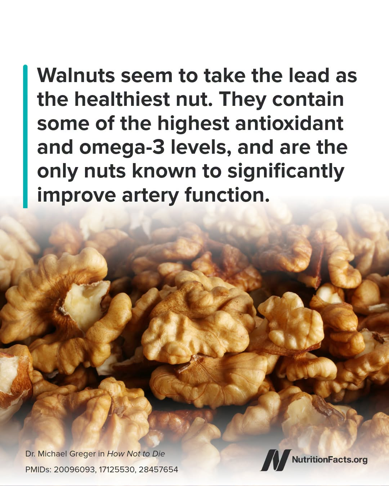

Walnut mortality video: should nuts be thought of as a life-extension drug?
Louis shares a Physionic video on walnuts and mortality, noting the mortality data are hard to ignore.
A shared summary reports that across studies nut consumption consistently tracked with lower all-cause mortality, with most benefit around 15 g per day and a plateau beyond. Walnuts showed lower mortality in women and men, and the association persisted among people with healthy diets.
🌰 Could walnuts be linked to a lower risk of death?
Across the studies analyzed, overall nut consumption consistently tracked with a reduced risk of all-cause mortality. None of the individual studies in the main meta-analysis showed an increased risk of death from eating nuts.
Most of the observed benefit occurred at about 15 grams of nuts per day—roughly half of a standard serving. Beyond that amount, the relationship largely plateaued.
Walnuts showed the same pattern. Greater walnut consumption was associated with lower total mortality in both women and men. Among women, the relationship appeared at lower intake levels, while among men it was clearer at higher levels.
The association remained even among people who already followed relatively healthy diets.
The best available estimate is 28 grams of walnuts two to four times per week, averaging about 15 grams per day across the week. This was associated with a mild but consistent reduction in mortality risk.
Main Points Summary 📌
- Nuts were associated with lower all-cause mortality.
- Most of the observed benefit occurred near 15 g/day.
- Walnuts were associated with reduced mortality in both women and men.
- The relationship remained across different levels of diet quality.
- Two to four servings per week matched the available estimate.
References:
[876] 10.3390/nu13082699
[877] 10.1016/j.jacc.2017.09.035
[878] 10.1186/s12916-016-0730-3
[879] 10.1017/BJN20061864
[880] 10.1056/NEJMoa1307352
[881] 10.1001/jamainternmed.2014.8347
[882] 10.3945/ajcn.114.099846
[883] PMID: 9343002
[884] 10.1093/aje/kwt006
[885] 10.1186/1741-7015-11-164
[886] 10.1016/j.nut.2014.02.018
[887] 10.1016/j.numecd.2015.09.006
[888] 10.1017/S0007114515002378
[889] 10.1038/srep22619
[890] 10.1093/ije/dyv365
Louis shares a Physionic video on walnuts and mortality, noting the mortality data are hard to ignore.

Louis highlights that no drug has been shown to cut both total and cancer mortality by about 40% in healthy people within 5 years, yet this was seen with nuts in PREDIMED. He stresses the caveat that it was a post-hoc observational analysis of an RCT.
A shared summary of an 18-month RCT comparing a healthy diet, a Mediterranean diet and a Green Mediterranean diet enriched with green tea and Wolffia globosa (mankai duckweed). The Green Mediterranean diet reduced visceral fat by about 14%, the largest effect of the three arms. Visceral fat drives inflammation and metabolic dysfunction.
In an 18-month randomized trial of nearly 300 participants, a standard healthy diet, a Mediterranean diet, and a Green Mediterranean diet with green tea and mankai (duckweed) were compared on hippocampal occupancy, a marker of brain aging. Louis highlights that Mediterranean diets slowed brain aging in people over 50. Linked paper is the DIRECT-PLUS Green-MED brain atrophy analysis.

NutritionFacts shares that walnuts may improve the ability of arteries to relax and open, relevant to heart disease prevention.

NutritionFacts summarizes PREDIMED, in which over 7,000 high-risk people were randomized and one group received free nuts weekly for four years. The nuts group appeared to cut stroke risk about in half, and higher nut intake overall was linked with lower premature death; walnuts may improve artery relaxation.